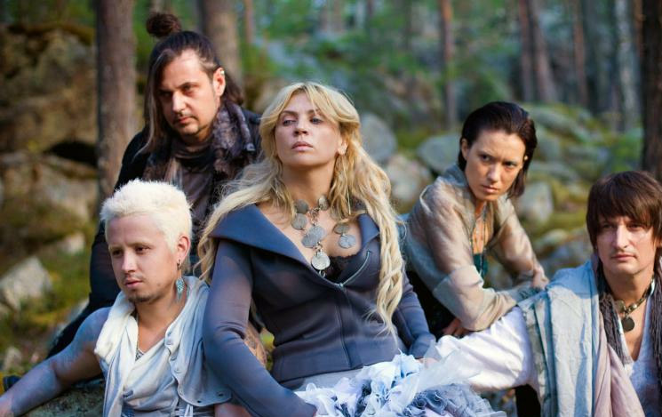
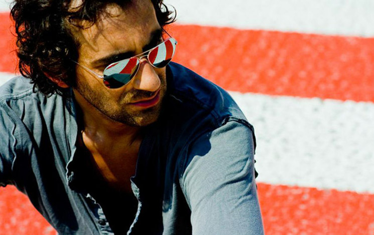

АФИША Каждую субботу специально для вас мы проводим концерты известных артистов и ди-джеев. 1ИЮНЯ  Город 312 1 июня состоится открытие Загородного клуба «Солнечный», на котором выступит группа «Город 312». 22ИЮНЯ Полина Гагарина 22 июня пройдет концерт певицы Полины Гагариной. Полина проведет с вами 2 часа с вокально-инструментальным концертом. 20ИЮЛЯ  Machete (Tokio) 20 июля Ярослав Малый, фронтмен группы Tokio, представит свой сольный проект «Мачете», который считается одним из самых громких стартапов в музыкальной индустрии. 2АВГ. Гоша Куценко 2 августа состоится творческий вечер одного из самых популярных и узнаваемых актеров российского театра и кино – Гоши Куценко.